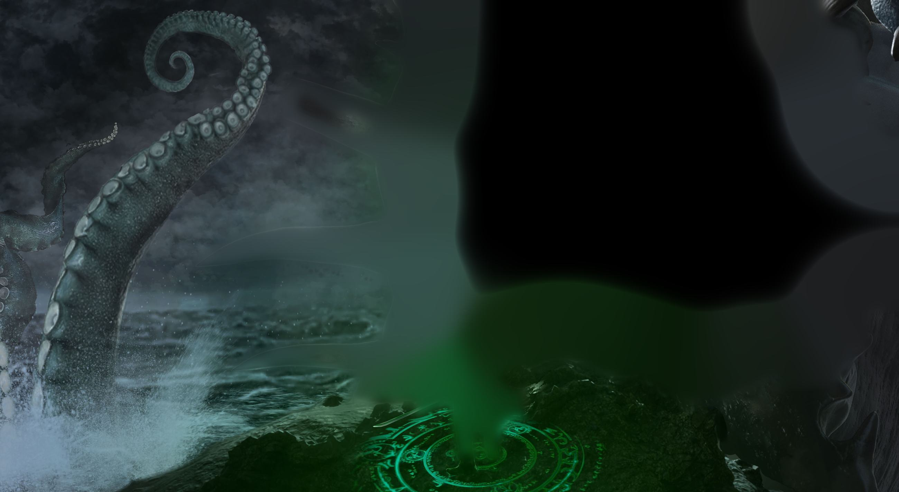
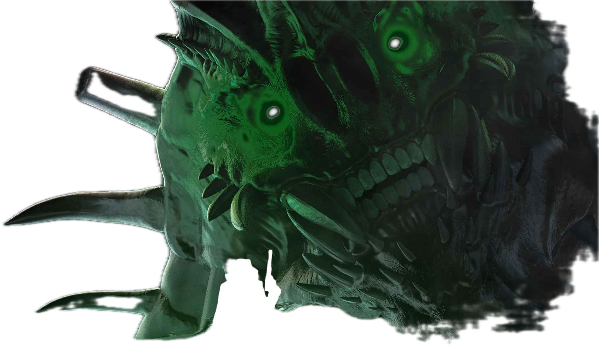
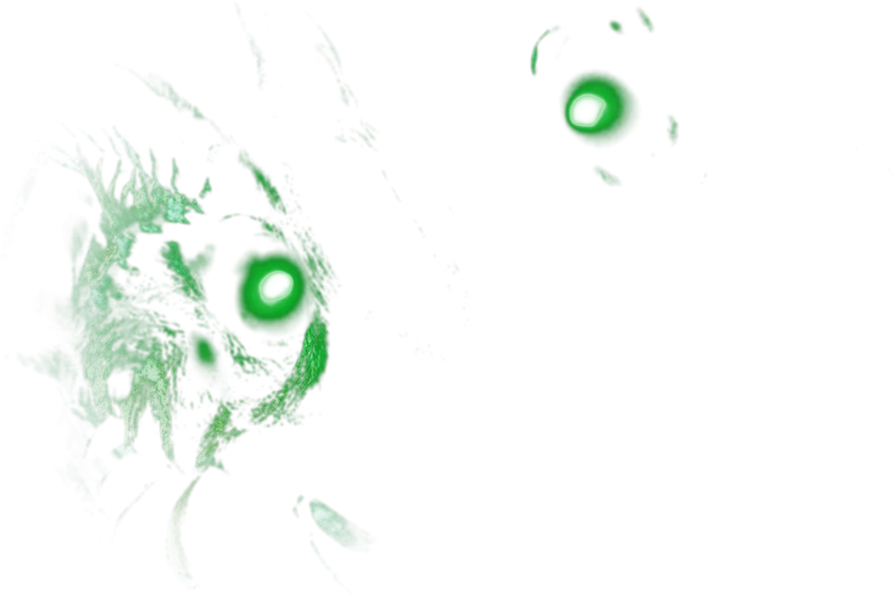
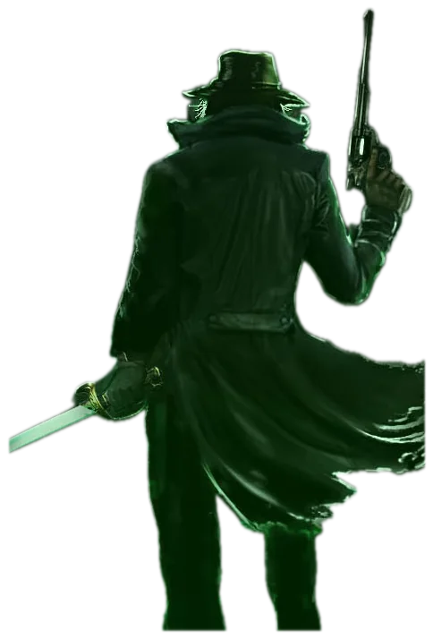
Slaying monsters. It ain’t much, but it’s honest work.
Gateway to Dark Stars, the Vincent Temple Trilogy
Gateway to Dark Stars
The Vincent Temple Trilogy
1
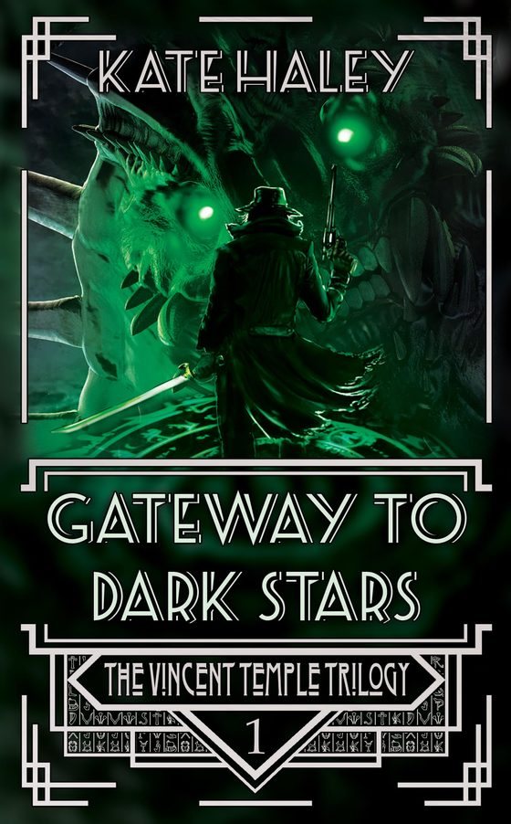
Gateway to Dark Stars
Slaying monsters. It ain’t much, but it’s honest work.
In the age of jazz and bootleg liquor, black magic is making a big comeback. Luckily, the scourge of demons and cultists are keeping Doctor Vincent Temple in business. Even the Mafia are having trouble with monsters, and they’ve hired Temple to sort it out.
Cash is cash, and the old Doctor has never been one to turn his nose up at a job, no matter who’s paying. This time luck is smiling on him. The gangsters are tangling with a cult Doctor Temple has been stalking over a personal matter, but when reconnaissance turns into rescue can he save the world before things become too personal?
The Witcher meets Cthulhu, gruesome and high-octane.
Doctor Vincent Temple
Fights an endless battle against the eldritch horrors that seek to dominate and destroy our world. But can he do it alone?
Made for the shelf
The whole trilogy and the prequel as deluxe hardbacks, each one made to order.
- Custom foiled covers
- Illustrated endpapers
- Sprayed edges
- A boxed set for all four, now with 3D bookmarks
Met me at a con?
If you started a set at my table, at Armageddon in Auckland or anywhere else, and want to finish it in Aotearoa, get in touch and I’ll sort you out.
Write to the raccoon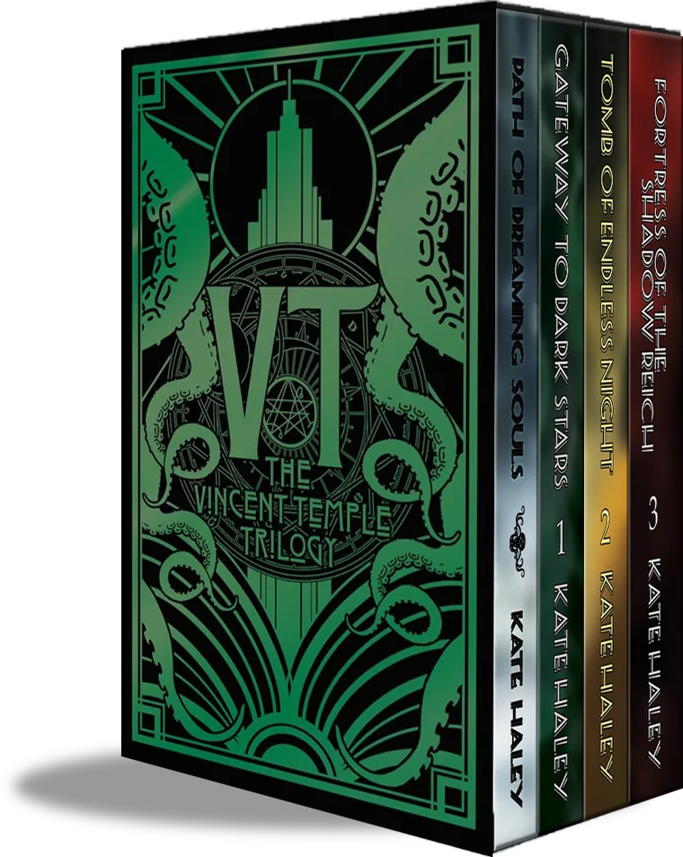
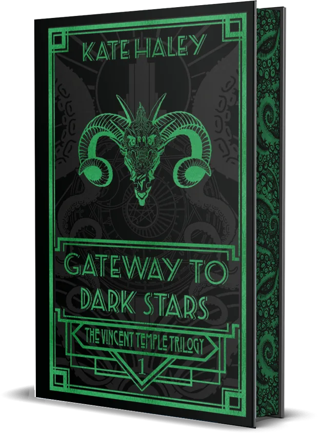
Other worlds
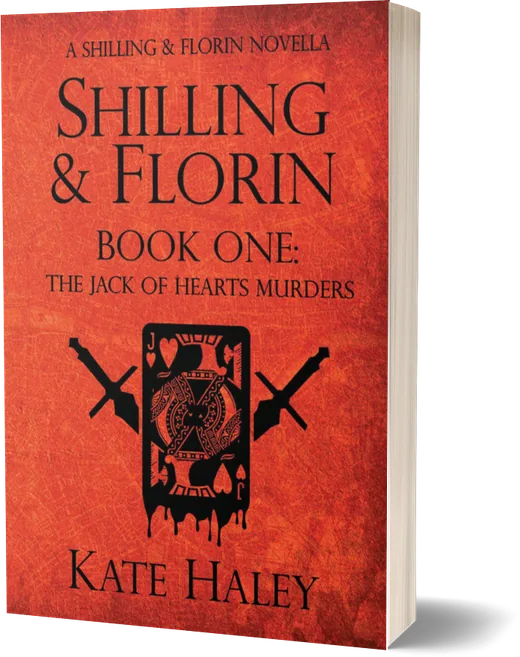
Shilling & Florin
A slow burn, cosy series of mysteries in an alternate, progressive Victorian London. A scruffy anarchist sleuth, a brilliant medical student, and a serial killer to start. Eight books.
The whole series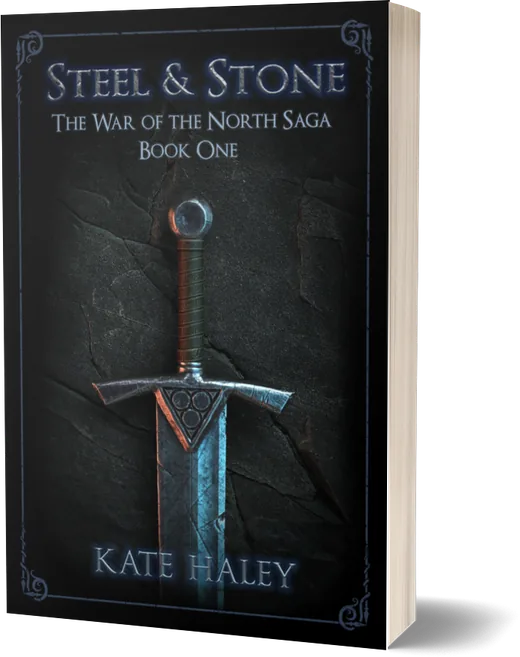
The War of the North
Gods, dragons and monsters, and a group of friends who uncover a terrible plot and have to save their world from it. Seven books, starting with Steel & Stone.
The whole saga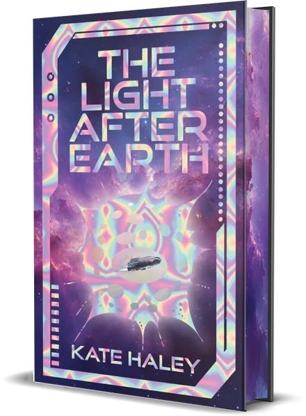
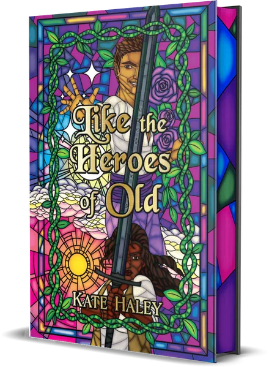
And two standalones: The Light After Earth and Like the Heroes of Old. Stand alone books
Kate Haley
I write speculative fiction, mostly fantasy and horror.
When I’m not writing or playing tabletop RPGs, I’m working on world domination. Something like the tyranny of the greatest city atop the Disc would be an acceptable standard. A super-villainous overlord would be an upgrade, given that our current villains lack style and imagination.
After all, super-villainy requires Presentation.
If you like my references, try my books.
A free book
Join my mailing list and get Footsteps into the Unfamiliar, the illustrated edition, as an ebook. Begin the saga today.
Collect free book